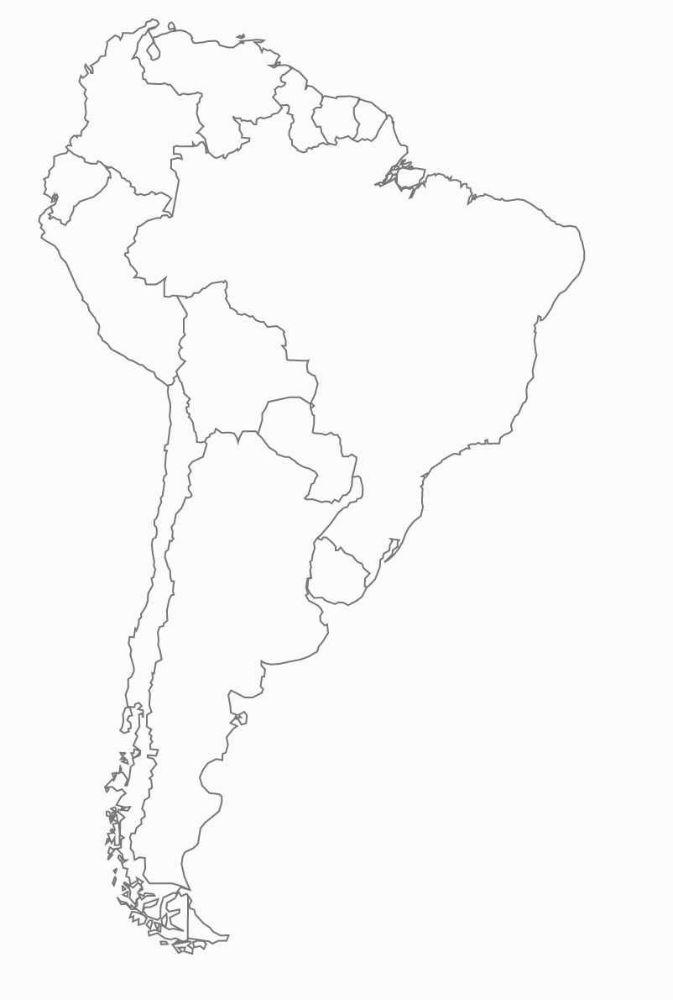
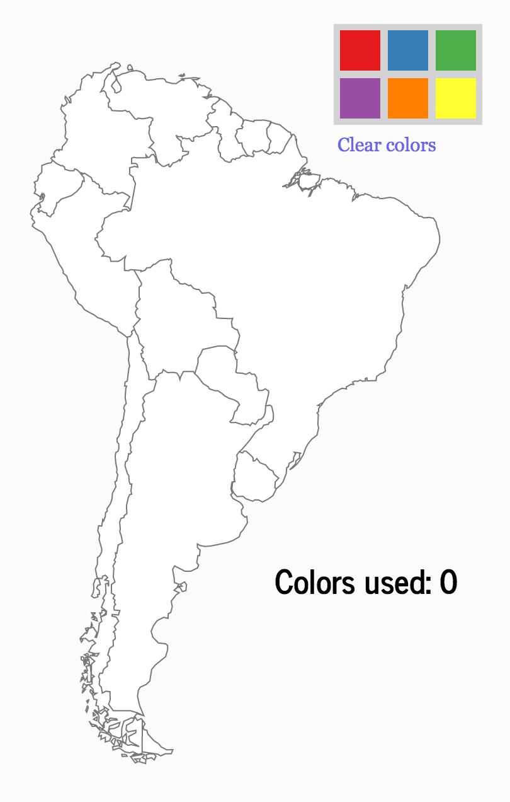
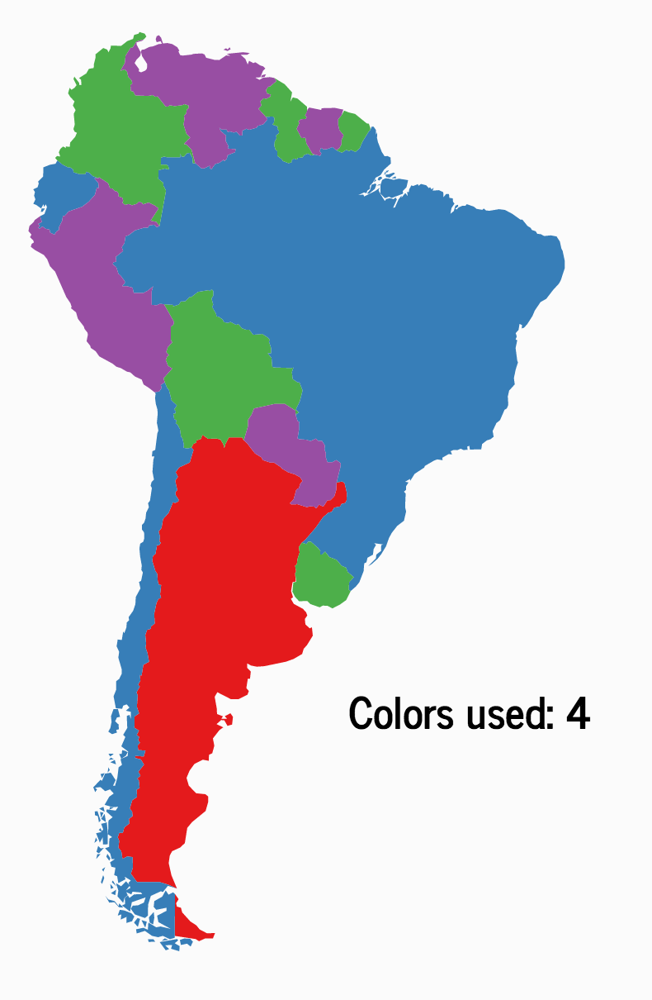
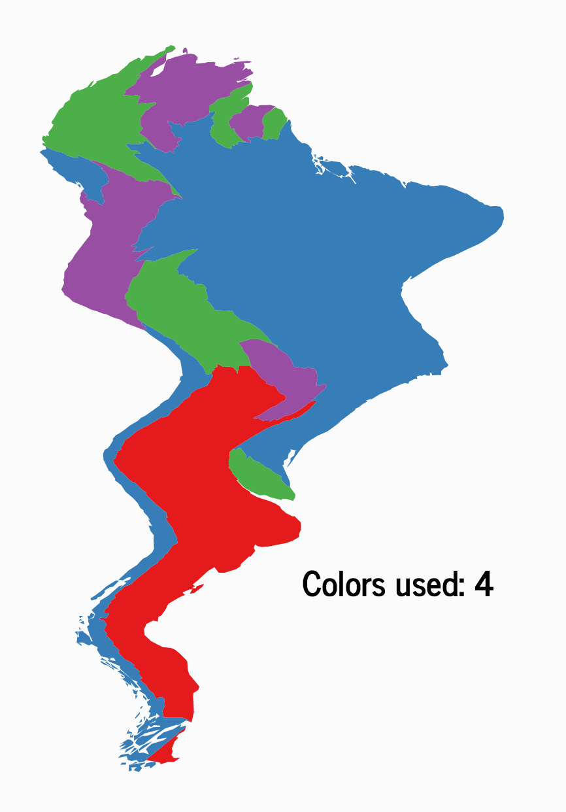
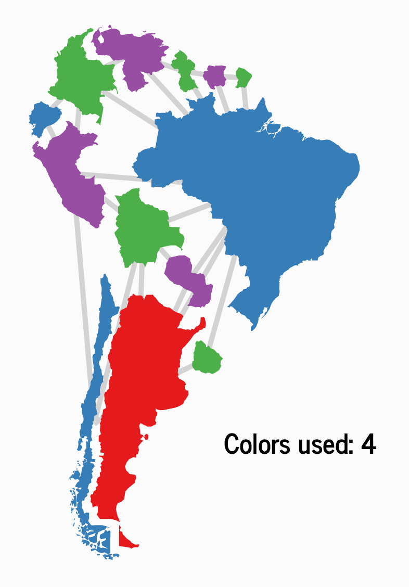
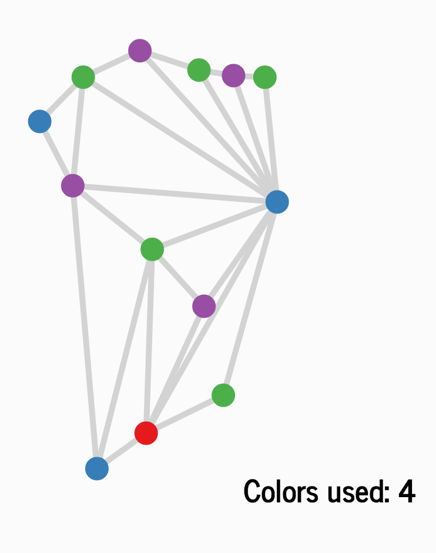
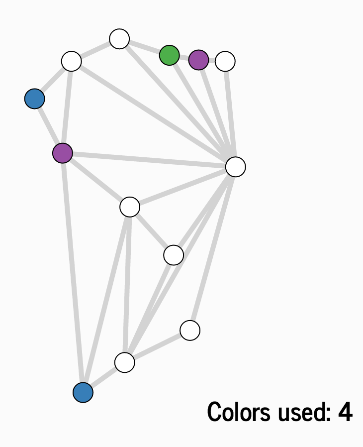

Here's a map of South America. It looks alright, but it's definitely missing something. Color! Not only does color class up any drabby old atlas — it also makes it easier to stay oriented as you read a map. Shading in countries on a map makes them much easier to tell apart.
So let's color in the map. But as we do so, let's make sure to balance two opposing goals:
How many colors does it take to color the map? And how do we do it?
To find out, let's try our hand at map-coloring. Scroll down to continue.

Use the palette to paint in the map. Try to use as few colors as possible, while making sure that neighboring regions use different colors.

That is a rad-looking map. It follows the rule we made above, that neighboring countries must always be colored different colors. And it pulls this off using just four colors.
But can we be sure that this is the smallest number of colors possible?
To help answer this question, let's strip away unnecessary, distracting parts of the image, and find the simplest picture of the situation that captures the information we need.
As you were coloring the map, what information from the map was essential? What did you have to pay attention to, and what was unimportant?

One thing that's clear is that the exact geometry of the map isn't too important. Look what happens when we bend and ripple the map. Lines of longitude and latitude get totally messed up. Distances become totally inaccurate. There isn't too much these distorted maps are good for.
But as far as coloring is concerned, these warped maps are just as good as the original. Mathematically, this means that coloring is a topological task. The exact shapes and sizes on the map don't matter — just the structures that stay the same when the map is warped.
In the end, coloring relies on only one (topological) piece of information: which countries are next to which countries?
getting seasick… gotta turn off the wiggle…

To emphasize the information we care about, we'll shrink the countries and connect them by lines whenever they are neighbors. Hover over the lines to see what they mean in words.
Our map has become a funny-looking archipelago, like Australasia in Risk. But this is a better representation than before. It emphasizes the information we care about, and shows that the particular shapes of the borders don't matter at all.
In fact, let's throw out the shape information completely.

When we get rid of shape, all we are left with is a network of dots, connected by lines.
Each dot represents a country (hover to see which), and each line represents the fact that two countries neighbor one another.
What we have here is a network of dots connected by lines. Mathematicians have been studying networks like this for hundreds of years. We should probably just call them "networks", but history has burdened them instead with the awkward name graphs.
A graph consists of two things, taken together:
But it's very important to make clear that we don't care where we draw a vertex in space, or how exactly we draw an edge. The graph is just the information about which pairs of vertices are connected to each other, and which aren't. You can drag vertices around all you want, and as long as you don't rewire the connections between vertices, you will just produce different pictures of the same underlying graph.
Go ahead. Drag vertices around all you want. :)
But if a mathematical graph is just a bunch of featureless vertices and featureless edges between them (and it is), then our picture to the left is a bit more than just a graph. As we took the map of South America and squeezed this graph out of it, the coloring of the countries came along for the ride, and now form the colors of the vertices.
⇒
Our all-important rule, that neighboring countries must be painted different colors, also carries over. It now says that two vertices connected by an edge must be colored different colors.
Mathematicians who study graphs are interested in colorings of graph vertices that follow this rule. They call them, well, colorings. That is, a coloring of a graph is a way of assigning colors to its vertices, such that any two vertices connected by an edge always get different colors.

This graph is all the information we need. Suppose I gave you the graph to the left instead of the original map, and told you to color it, in the mathematician's sense. Whatever coloring you came up with, I could use the correspondence between vertices and countries to turn this into a coloring of the map of South America.
Something amazing has happened here. We started with a real-world problem, and then found a structure hidden within which captured exactly what we needed, and no more — a graph. Now we can go and study graphs, understanding their structure and meaning. Contained within this study will be the answers to all our riddles of map-coloring. And we don't even need to know what the border of Tierra Del Fuego looks like.
I think this is a great moment.